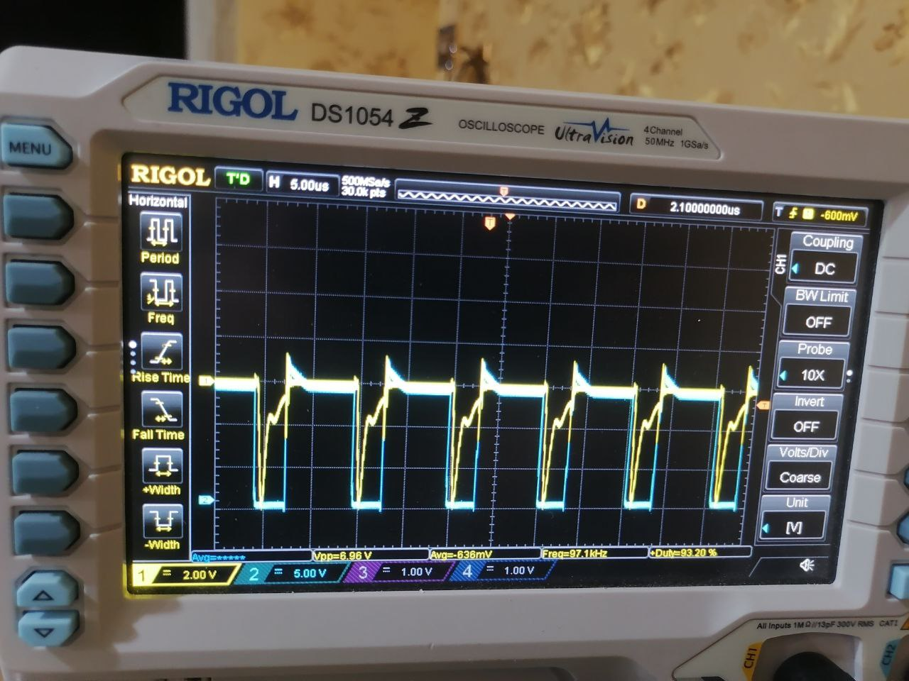
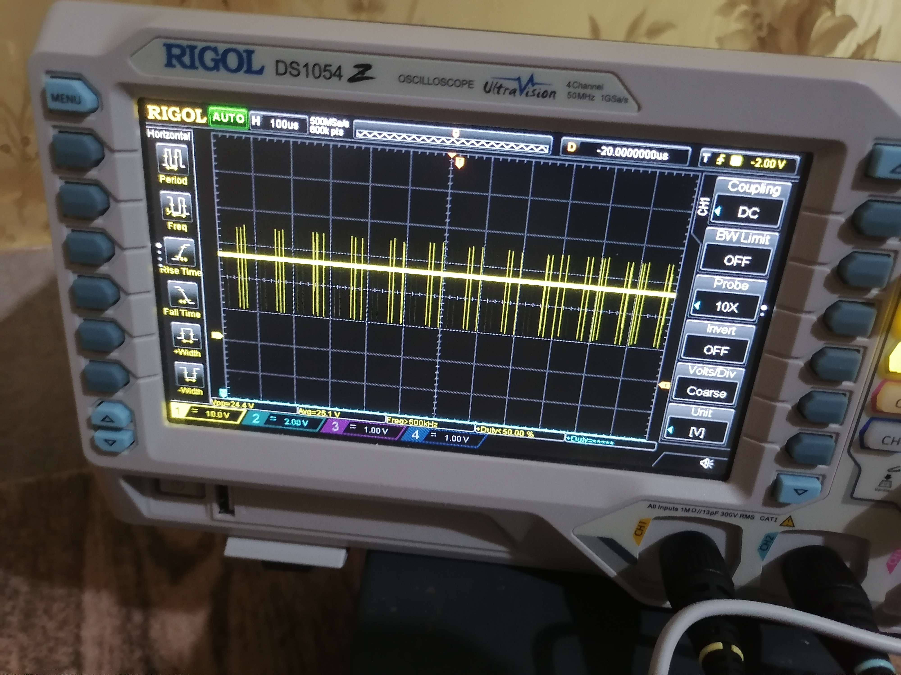

Two Iterations, One Lesson
An SMPS converts power efficiently by switching a transistor between saturation and cut-off, using reactive elements to filter the resulting pulsed energy into regulated DC. The efficiency gain over linear regulators comes at a real engineering cost: the switching action couples noise everywhere, magnetics must be designed carefully, and the closed-loop control must be stable across line and load variations. Getting this right took two distinct design iterations.
The project is also a lesson in how real hardware design works: you do not go from schematic to success in one pass. You find parts, simulate, order, build, measure, discover that something does not match the model, change the design, and repeat. The design flow below reflects that reality.
Iteration 1 (V0.3) — Custom Control Loop
The first complete iteration built a custom control architecture: a combined feedforward and feedback loop. The feedforward path compensates for line voltage variations before they affect the output; the feedback path closes the voltage regulation loop with a classical Type-II compensator. The converter power stage and compensation network were designed analytically, simulated in Cadence PSpice (also validated in Proteus for a second opinion on switching behaviour), and then physically constructed.
Loop compensation was designed using Bode analysis: the plant transfer function (duty-cycle to output voltage, including inductor, capacitor, and ESR) was derived analytically, then the compensator zeros and poles were placed to achieve the target phase margin of 45° minimum and gain margin of 10 dB. The iterative nature of this process — simulate, measure, adjust, re-simulate — was the most time-consuming part of the project. A feedforward + feedback loop is also more sensitive to component tolerances than a purely feedback design, which motivated the second iteration.
Iteration 2 (V0.4) — TI UC3842 + UCC27324D
The final implemented version replaces the custom control loop with Texas Instruments' UC3842 integrated current-mode PWM controller and a UCC27324D dual gate driver. This is a well-established industrial approach: the UC3842 handles current-mode control internally (inner current loop is already closed at the IC level), leaving only the voltage error amplifier external for the outer voltage loop. Current-mode control has superior line rejection, simpler loop compensation, and inherent cycle-by-cycle current limiting.
 Fig. 1.
Simulated open-loop Bode plot of the compensated voltage loop in the V0.4 design. Current-mode control with UC3842 shapes the power-stage response; the external error amplifier compensator provides the remaining phase boost at the crossover frequency.
Fig. 1.
Simulated open-loop Bode plot of the compensated voltage loop in the V0.4 design. Current-mode control with UC3842 shapes the power-stage response; the external error amplifier compensator provides the remaining phase boost at the crossover frequency.
The UCC27324D gate driver (4 A peak, 9 ns rise/fall) drives the power MOSFET directly from the UC3842 output stage, improving switching speed and reducing gate drive loss. The combination is a proven TI reference topology — the value of V0.4 was in implementing it from the datasheet, understanding each external component (bootstrap, soft-start, current-sense resistor, compensation network), and verifying the actual switching behaviour on the bench.
The Real Design Flow
Bench Results

Fig. 3. Oscilloscope capture of the MOSFET gate drive and drain voltage during switching transitions in the V0.4 design. Gate drive from the UCC27324D produces clean rise/fall edges. Snubber network suppresses ringing at the drain to within acceptable bounds.
Fig. 4. Output voltage response to a load step. Settling behaviour reflects the loop bandwidth and phase margin of the outer voltage loop — consistent with Bode plot predictions from simulation.What the Project Taught
The V0.3 to V0.4 progression captures something important: the difference between knowing how a circuit should work and knowing how to make one that actually works. V0.3 demonstrated the control theory. V0.4 demonstrated component integration — understanding why an IC like the UC3842 exists, what problems it solves versus a discrete implementation, and how its datasheet translates into physical component values. The iterative cycle of simulate, build, measure, change was repeated many times across both versions. That process — not any single design choice — was the education.